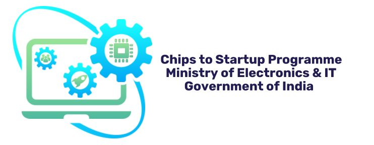
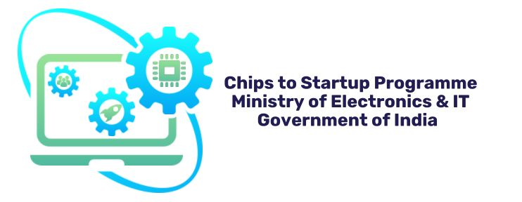

Objective
Enhance industry-relevant skills through project-based learning in the space of AI and SoC via an experiential mini-project.
To ignite a culture of innovation by empowering students to ideate next-generation SoC solutions that unite AI and sustainability, leveraging Arm architecture — preparing them to shape the semiconductor future.
Eligibility Criteria
- Participants must be Indian nationals.
- Participants must be associated with an Indian institute.
- Students must be nominated by their respective college.
- Teams of 1–3 students can apply.
- All team members must be from the same college.
- Team must have a Team Leader & Faculty Mentor.
- Participants must be willing to learn about Edge AI, Software-Hardware Co-design, and Embedded Systems.
Challenge Guidelines & Terms
- Only eligible students can participate.
- Team size: 1–3 members.
- Only Team Leader registers for the team.
- Duplicate registration results in rejection.
- Registration details must be accurate.
- Mentoring by industry & academic experts (virtual) & college mentors (local).
- Teams can reach out to mentors(experts) via support email id as mentioned.
- Mini project to be hosted on GitHub and submitted using the challenge submission form.
- All Challenge related notifications & updates will posted in this page.
- Winners must provide college ID & documents.
- Updates will be posted on this page.
- The selection of finalists and winners will be solely at the discretion of the organizers of this challenge.
- Support: support@armbharatchallenge.com
Detailed Timeline
| Activity | Description | Start | End |
|---|---|---|---|
| Registration | Interested students can register using the below registration link | 05 Jan 2026 | 20 Jan 2026 |
| Mentoring Session | An online mentoring session by industry & academic experts will be conducted whose details will be shared in this webpage & also mailed to registrants | 10 Jan 2026 | 20 Jan 2026 |
| Project Submission | Project Submission form will be shared with the participants | 10 Feb 2026 | 15 Feb 2026 |
| Project Evaluation | The submitted projects will be evaluated by the industry & academic experts & accordingly Finalists will be selected | 05 Feb 2026 | 05 Mar 2026 |
| Finals | The Finalists will be invited for a virtual meetup/hack to deliver a pitch | Mid of March | |
| Winners Announcement | The winning teams will be announced in this webpage with the details of the Rewards | Mid of March | |
Support & Queries
For general support, email:
support@armbharatchallenge.com
For any technical queries with regards to the problem statements, please mail your queries to tech-queries@armbharatchallenge.com clearly mentioning the problem statement number in the subject line.
All updates will be posted on this page.
Frequently Asked Questions (FAQ)
Find answers to common questions about the Bharat AI-SoC Student Challenge.
Click here to view FAQs →